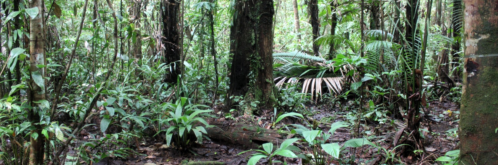

How do hydroelectric dams create islands and affect biodiversity?
anthropogenic habitat change
landscape ecology
community ecology
The role of the matrix in modified landscapes
landscape ecology
anthropogenic habitat change
biodiversity conservation
No matching items